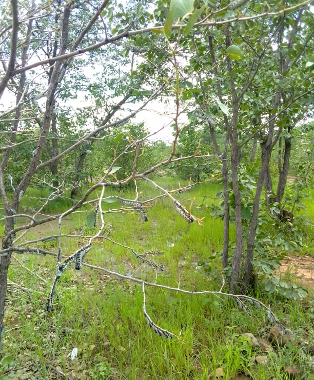

Freeman Moyo
About Me
My name is Freeman Nkosiyabo Mpokiseng Moyo. I am a Sotho born in Bulawayo and raised in Manama, Gwanda. I am a father of two amazing boys. I am a high school teacher. When I was young my dream was to work in academia, as a lecturer or to do research on animal nutrition and or animal genetics, however, though the dream is still there, I am now exploring other life and career pathways.

I am highly passionate about Linux and my main driver is Fedora. I am into reading, nature and I am someone who loves deep solitude. I do listen to music, with my favorite genre being Kalanga-Rhumba, Maskandi, Mbaqanga and Umculo wePhostoli. I am not a serious soccer fan, however, my favorite football is Highlander FC Amahlolanyama, iTshilamoya.
Gwanda, Zimbabwe

Gwanda is a hot dry region in the southern part of the country, next to Botswana and South African borders. There kind warm hearted people, with Sotho being the main language. However, people used to speak Jahunda, hence its usually called esiJahundeni. The main agricultural activities are animal rearing. However, the area is also rich in minerals such as gold